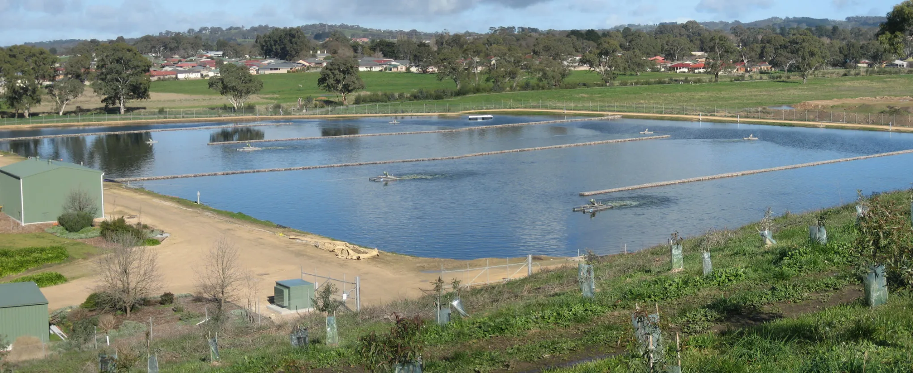
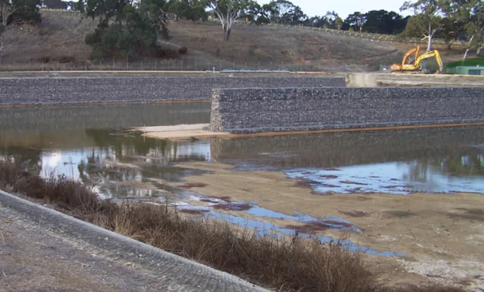

Project Overview
The District Council of Mount Barker, located in the rapidly growing region of South Australia, required a robust and long-lasting solution to improve the performance of its wastewater treatment facility. As the local population expanded, the existing infrastructure faced increasing pressure to handle higher volumes of wastewater while maintaining strict environmental compliance standards.
Kestrel Metal was engaged to supply gabion baskets and rock mattresses for the construction of a baffle system within the treatment ponds. The gabion structures were designed to control flow patterns, increase retention time, and promote the natural biological treatment processes that are essential for effective wastewater purification.
The project demanded materials capable of withstanding a highly corrosive environment, including constant exposure to treated and untreated wastewater, fluctuating water levels, and the aggressive chemical compounds typically found in municipal wastewater streams. Long-term durability and minimal maintenance were critical requirements for the council.

The Challenge
Wastewater treatment environments present some of the most demanding conditions for any construction material. The constant exposure to hydrogen sulphide, ammonia, and other corrosive compounds found in wastewater can rapidly degrade unprotected steel, leading to structural failure and costly replacement cycles.
The existing treatment pond system at Mount Barker lacked effective flow control mechanisms, resulting in short-circuiting where wastewater bypassed the intended treatment zones. This reduced the overall treatment efficiency and threatened the council's ability to meet discharge quality standards set by the South Australian Environment Protection Authority.
Additionally, the solution needed to be installed without disrupting the ongoing operation of the treatment facility, requiring a modular and flexible construction approach that could be deployed in phases. The materials also needed to be environmentally safe, with no risk of leaching harmful substances into the treated water discharge.
Our Solution
Kestrel Metal supplied a comprehensive gabion system comprising gabion baskets and rock mattresses manufactured with a high-grade zinc-aluminium alloy coating combined with an additional polymer layer. This dual-coating system provides exceptional corrosion resistance, specifically engineered to withstand the harsh chemical environment of wastewater treatment facilities.
The gabion baskets were assembled into baffle walls within the treatment ponds, creating a series of channels that force the wastewater to follow a longer, more controlled flow path. This significantly increases the hydraulic retention time and ensures thorough mixing and contact with the biological treatment media, resulting in improved treatment performance.
Rock mattresses were installed along the pond floor and embankments to provide scour protection and stabilise the substrate against erosion from continuous water movement. The permeable nature of the gabion and mattress structures allows water to flow through while filtering solids and supporting the growth of beneficial biofilm on the rock surfaces, which further enhances the biological treatment process.
The modular design of the gabion system allowed for rapid on-site assembly with minimal specialised equipment, enabling the council to complete the installation within the planned maintenance shutdown window without impacting the facility's day-to-day operations.
